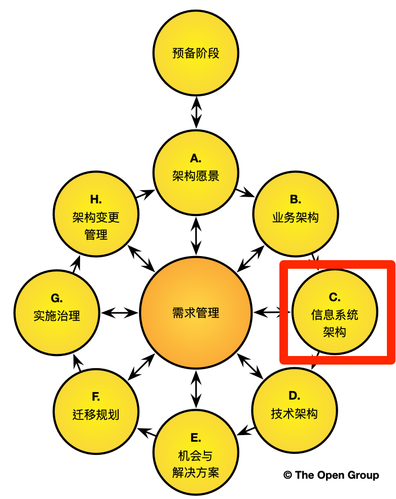
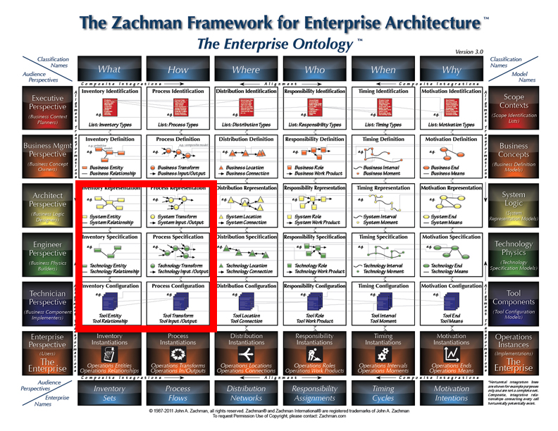
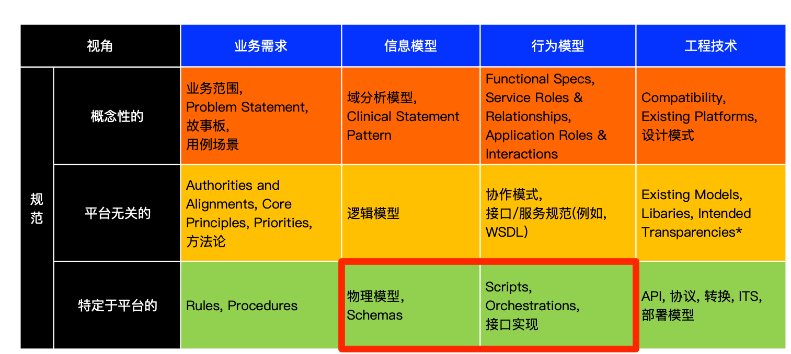
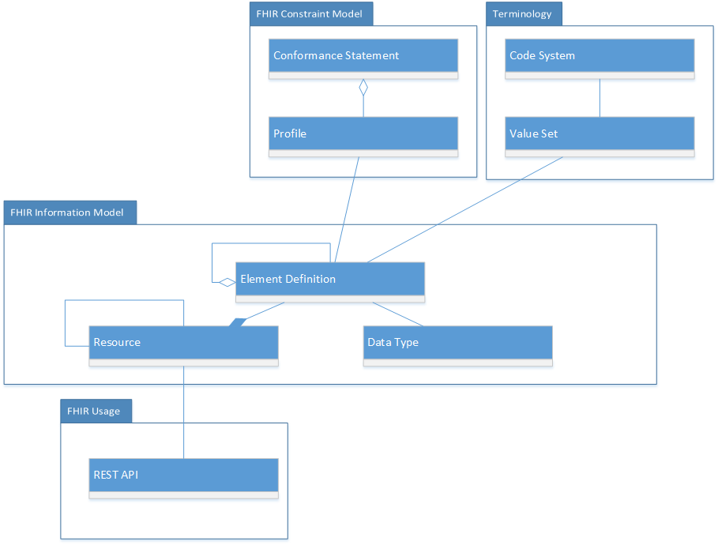

2.14 架构概述 
FHIR的核心包含两个主要组成部分：
- 资源 – 一组信息模型，用于定义与医疗保健大部分相关的“业务对象”的数据元素、约束和关系。从模型驱动架构体系角度来看，FHIR资源在概念上等同于用XML或JSON实现的物理模型。 请参阅正式定义。
- API – 两个应用之间进行互操作的定义良好的接口集合。 虽然不是必需的，但FHIR规范针对API实现的RESTful接口。查看有关FHIR RESTful接口的详细信息.
In the healthcare domain, the set of “business objects” is not universally defined, but there is a notional and ongoing evolutionary,
consensus-based process for standardizing on a core set of common business objects including things like “a patient”, “a procedure”,
“an observation”, “an order”, etc. (see a list of defined resources). The FHIR specification provides
a framework for defining these healthcare business objects (“resources”), for relating them together in a compositional manner, for
implementing them in a computable form, and for sharing them across well-defined interfaces. The framework contains a verifiable and
testable syntax, a set of rules and constraints, methods and interface signatures for “FHIR-aware” APIs, and specifications for the
implementation of a server capable of requesting and delivering FHIR business objects.
在医疗保健领域，“业务对象”并不是普遍定义的，但是有一个基于共识的渐进式，基于共识的流程，用于标准化一组核心的常见业务对象，
像患者、手术、观察、医嘱等(参见资源清单)。
FHIR规范提供了用于定义这些医疗保健业务对象(资源)的框架，用于以组合方式将它们关联在一起，
以可计算的形式实现它们，以及通过明确定义的接口共享它们。 该框架包含可验证且可测试的语法，一组规则和约束，
用于“FHIR感知”API的方法和接口签名，以及用于实现能够请求和传递FHIR业务对象的服务器的规范。
From an operational perspective, HL7’s internal standards development and governance processes determine what constitutes a
resource and which resources exist. In addition, the FHIR specification also provides a mechanism for contextualizing resources for
specific needs within specific bounds (see Profiling Resources).
从运营角度来看，HL7的内部标准制定和治理流程决定了资源的构成以及存在的资源。 此外，FHIR规范还提供了一种机制，
用于在特定范围内针对特定需求对资源进行上下文化(请参阅Profiling资源)。
2.14.1
架构框架和FHIR Alignment
FHIR资源非常适配信息架构领域，而用于数据交换的FHIR API则适用于应用程序架构的各个方面。
|
从TOGAF 的角度来看，
FHIR致力于解决有关 的角度来看，
FHIR致力于解决有关信息模型定义和数据交换的架构视图，这处于TOGAF架构开发方法中的信息系统架构部分。
译者注: 开放组体系结构框架（TOGAF）是一个行业标准的体系架构框架，由国际标准权威组织The Open Group制定。
TOGAF是一个基于迭代的过程模型，支持最佳实践和一套可重用的现有架构资产。它可让您设计、评估、并建立组织的正确架构。TOGAF的关键是架构开发方法(ADM)，一个可靠的、行之有效的方法，能够满足商务需求的企业架构。
企业架构方法有很多，但TOGAF是最主流的。不仅有80%的福布斯全球排名前50的公司在使用，而且支持开放、标准的SOA参考架构，已得到国际主流厂商的推动。
|

|
|
对于Zachman框架，
FHIR符合架构师、工程师和技术人员视角的"What"和"How"的范围。
|

|
|
当考虑HL7服务感知互操作性框架(SAIF)时，
那么FHIR资源和RESTful API又分别处于信息模型、行为模型视角与规范的平台特定层的交叉位置的"物理模型"和"接口实现"。
|

|
2.14.2
FHIR和架构原则
FHIR’s primary purpose is to address interoperability with well-structured, expressive data models and simple, efficient data exchange mechanisms.
In addition, FHIR aligns to the following architectural principles:
-
可重用和可组合性 – FHIR resources are designed with the 80/20 rule in mind – focus
on the 20% of requirements that satisfy 80% of the interoperability needs. To this end,
resources are designed to meet the general or common data requirements of many use cases
to avoid the proliferation of numerous, overlapping and redundant resources. Extension and customizations exist
(see FHIR Profiles) to allow common, somewhat generic resources to be adopted
and adapted as needed for specific use case requirements. In addition, FHIR resources are highly composable
in that resources commonly refer to other resources. This further promotes reuse and allows for complex structures
to be built from more atomic resources.
-
可扩展性 – Aligning FHIR APIs to the REST architectural style ensure that all transactions are stateless which
reduces memory usage, eliminates the needs for “sticky” sessions within a server farm and therefore supports horizontal scalability.
-
性能 – FHIR resources are lean and optimized for exchange across the network. This has the potential to
improve performance in complex transactions across multiple systems connected via a shared and finite network.
-
可用性 – FHIR resources are understood by technical experts and non-technical people alike. Even if the details of
XML or JSON syntax are not understood, non-technical people can view these in any browser or text reader and understand the contents within them.
-
数据保真度 – FHIR是强类型的，并具有内置的机制，用于临床术语链接和验证。In addition,
XML and JSON documents can be validated syntactically as well as against a defined set of business rules. This promotes high data
fidelity and goes a long way towards using FHIR to achieve semantic interoperability.
数据保真度 - FHIR是强类型的，并具有内置的机制，用于临床术语链接和验证。 此外，XML和JSON文档可以在语法上以及针对一组已定义的业务规则进行验证。 这促进了高数据保真度，并且在使用FHIR实现语义互操作性方面走了很长的路。
-
可实现性 – One of the driving forces for FHIR is the need to create a standard with high adoption across disparate developer communities.
FHIR is easily understood and readily implemented using industry standards and common mark-up and data exchange technologies.
There are additional architecture principles related to consistency, granularity, referential integrity, and others that are not as
well established or proven. See the section below on Outstanding Issues for details.
2.14.3
FHIR Decomposition
As discussed, FHIR’s principle components are resources and RESTful APIs. However, there is more to the FHIR specification including the components depicted below.
NOTE: The term “component” is used loosely to mean a part of something and does not intend to carry the specific meanings for this term
provided by rigorous ontologies, modeling frameworks, or other architectural and organizational constructs. Diagrammatically, the components
below are depicted below as UML classes. This is done purely to take advantage of the semantics afforded using this notation. FHIR is neither
objected oriented in its modeling approach nor are the component that make up the FHIR specification UML classes or objects in the formal sense.
Likewise, the UML packages shown below are notional and used for organizational purposes only.
As shown in the diagram below, it is convenient to think of the FHIR specification as having components that address the following:
-
信息模型 – the components of FHIR related to the creation of FHIR resources
-
约束 – the components of FHIR addressing constraints and validity
-
术语 – the components of FHIR related to clinical terminologies and ontologies
-
使用 – the component of FHIR addressing the use of FHIR in a run-time capacity

组件定义：
- FHIR信息模型
- FHIR一致性模型
- FHIR术语
- FHIR使用
2.14.4
资源创建 – 架构上的考量
下面列表提供了在定义FHIR资源时适用的一般准则。这些列表项中的大多数都不能以编程方式强制执行，需要人员尽力维护以确保遵守。
- 资源应该有明确的界限；匹配一个或多个逻辑事务范围中的一个
- 资源在意义上应该彼此不同，而不仅仅是在使用中（例如，实验室报告的每种不同使用方式都不应导致使用不同的资源）
- 资源需要具有自然的标识
- 大多数资源应该非常常见并且用于许多不同的业务事务中
- 资源不应太过具体或者详细，以对业务交易进行广泛支持
- 资源应该是互斥的[这是一个非常重要的考虑因素，有助于减少冗余和模糊]
- 资源应该使用其它资源，但它们不应仅仅是其它资源的组合；每种资源都应引入与众不同的内容
- 资源应被组织在一个逻辑框架中，基于资源的共性和它所链接的内容(参见下面的资源框架)
- 资源应足够大，以提供有意义的上下文；仅包含少数属性的资源可能太小而无法提供有意义的业务价值
- 资源应反映一般用法：
- 如果大多数系统将某些东西视为一个单一概念，则应创建一种资源；如果大多数系统将某些东西视为不同的概念，则应建立多种资源
- 如果一个"资源"的两种不同用法会导致对资源“核心”组成产生截然不同的解释，则创建两种资源可能更合适。
- 趋向于使用更少资源而不是更多资源，是一种偏见
2.14.5
FHIR资源的组织结构
在单个信息模型中对整个健康数据进行建模是不切实际的。从HL7V2消息的定义到FHIR资源的定义，每个建模过程都主动地将医疗保健信息域分解为更小、
更易管理的子域或信息模型片段。在FHIR规范中每个资源都可以认为是医疗保健信息域中的一个片段。
在将医疗保健信息模型分解为更小的块(或FHIR资源)时，重要的是要有一个框架和一套指导方针，以促进资源结构内的一致性和完整性，以及资源间相互引用的方式。
下图显示的框架中包括了健康信息模型的子级分类，这些子级分类基于其共性程度被分别组织在不同的分层中。
这些分层和资源分类可用于识别医疗保健信息的哪些部分是最常见的，因此需要一致地定义和严格管理。
处于顶层的资源分类是最常见的，保罗了绝大多数常见的支持医疗保健交易的FHIR资源。
框架中各层的描述:
- Foundation Resources: 基础资源是最基本最基本的资源。它们通常用于基础设施任务。虽然没有被禁止，但并不总是被其他资源引用。
- Base Resources: 第二层由基础资源组成。它们通常是资源图谱的叶子节点。换句话说，它们通常由其他资源引用，但不引用其他资源。
这些资源通常是最常用的，因此需要最高程度的一致性和架构严谨性。Governance is greatest for resources in layers one and two.
- Clinical Resources: 第3层包括临床性质的资源，但在许多用例中也很常见。这包括用于临床观察、临床治疗、护理以及药物治疗的资源。
这些资源可以单独使用，但通常建立在后两种资源上。例如，观察资源将从第二层引用患者资源。当第三层，第四层和第五层中的资源引用这些资源时，这些资源也经常被上下文化。
Layer 3 includes the resources that are clinical in nature but are also very common across many use cases. This
includes resources for clinical observations, clinical treatment, care provision, and medications. These resources can be used by themselves, but
typically build on the resources in later two. For example, an observation resource will reference the patient resource from layer two. These resources
are also frequently contextualized when they are referenced by resources in layers three, four and five.
- Financial Resources: 第四层专门用于财务资源。从逻辑上讲，财务资源建立在临床和基本资源之上。例如，计费资源将参考临床事件和活动以及像患者这样的基本资源。
a billing resource will reference clinical events and activities as well as base resources like a patient.
- Specialized Resources: 在第五层，我们期望为那些不太常用的用例寻找到更加专业性的资源。这些资源几乎总是引用较低层的资源。鉴于FHIR优先考虑满足最常见的用例，本层中资源较少。
- Resource Contextualization: 第6层不包含资源。但是，它确实扩展了由前五层资源构成的组合框架。第6层包括配置文件和图表。
配置文件用于扩展、约束或以其他方式为特定目的设置资源。图表是包含其自身属性的资源或资源网络的组合。
Layer 6 does not contain resources. However, it does extend the composition framework made up by the first
five layers of resources. Layer 6 includes profiles and graphs. Profiles are used to extend, constrain, or otherwise contextualize resources for
a given purpose. Graphs are compositions of resources, or webs of resource, that contain attributes of their own.

你可以在资源页面上找到该框架的完整FHIR资源。
该框架有三个主要目的:
- 组织用于导航和识别的资源
Organize resource for navigation and identification
- 基于在同一类别中的资源之间描述预期结构和/或行为的常识分组或模式将资源分类为类别
Classify resources into categories based on common sense groupings or patterns describing expected structures and/or behaviors amongst resources in the same category
- 跨层传播资源，以便与顶层中最常见的资源分层相对的共性
Disseminate resources across layers to stratify relative common-ness with the most common resources in the top layers
Purposes 2 and 3 set the foundation for future architectural rigor and resource governance to optimize
consistency, integrity and predictability of new or refined resources in the future. The actual rules
and patterns will be defined and refined in future FHIR releases. However, one general guideline to
state now is that resources generally reference resources in the same layer or higher. In other words,
a layer 4 resource will typically only reference resources in layers 4, 3, 2 or 1. There is nothing
prohibiting a layer 4 resource from referencing a layer 5 resource, but this is not as common.
Given this guideline, it is possible to identify the resources that are likely to be most common
across use cases and therefore demand the highest degree of consistency and governance. Further, the
framework helps identify the areas where creating new FHIR resources is the highest priority. It is
generally a higher priority to create FHIR resources in the higher layers (layers 1, 2 and 3) than
it is to create FHIR resources in the lower layers (layers 4 and 5) because the higher layer resources
will provide the greatest value across the largest number of use cases and stakeholders. This is not
to say that the business transactions needed for the higher layers are not important, it’s just that
they are not as common across the whole healthcare space.
The 6th layer of the framework are not actually resources. Profiles and Clusters are extensions of resources
or resource compositions that continue the progression through the FHIR Composition Framework. The provide
additional contextualization required to satisfy certain use cases.
There are several benefits expected from aligning the creation of FHIR resources to this framework, including::
- Organization and manageability of health domains - the framework provides a basis for decomposition and modularity
- Identifying commonality - the framework teases out the common areas from the less common areas
- FHIR resources prioritization - the framework provides a structure for determining priorities and delegating work
- Tiered governance levels - the framework separates the areas needing the most stringent and universal governance from those that require more context-specific governance
The framework is further elaborated in the FHIR Resource Considerations page .
Another useful tool for visualizing how FHIR resources are organized relative to each other can be found using the Resource Reference
Visualization tool on clinFHIR .
2.14.6
FHIR实现 - 高层次的设计注意事项
2.14.6.1
FHIR服务器和API
FHIR REST服务器是实现FHIR API并使用FHIR资源进行数据交换的软件。下图描述了FHIR接口定义。方法分类如下：
- iServeInstance – 提供对资源执行Get、Put或Delete操作的方法
- iServeType – 提供获取有关资源的类型信息或元数据的方法
- iServeSystem – 提供暴露或启用系统行为的方法
关于FHIR API的其它详细信息参见FHIR RESTful API和操作框架.

2.14.6.2
FHIR事务
As mentioned, FHIR resources are optimized for stateless transactions with RESTful APIs. Although this is not the only way FHIR resources can be used, these types or transactions are the only ones with defined interfaces and behaviors in the FHIR specification.
FHIR transactions follow a simple request and response transaction pattern. The request and response can be for be for a single payload or can operate as batch. The payload or a request and response consists of a header and the content of interest. See diagram below for details.

2.14.6.3
安全
（本章节将要被填写）（在此期间请参见安全性）
使用FHIR的场景示例
出于说明性目的，下图描绘了患者访问由底层的电子病历系统（EMR）提供个人健康记录（通过门户）的简单示例。在此示例中，EMR系统扮演FHIR服务器的角色。
此场景的前提条件是：
-
EMR系统实现了必须的FHIR API
-
EMR系统实现了必须的身份验证和授权机制
-
患者已成功通过身份验证并获得FHIR资源的访问授权
The basic flow of the use case is that the patient registers (if required), logs in, enters search criteria to identify a patient or
patients of interest (the patient is most like themselves in this use case), retrieves clinical documents for the patient and
retrieves clinical resources for the patient. The use cases utilizes the GET methods on the iServeInstance interface and works
with the following types of FHIR resources:
示例场景的基本流程是患者登记（如果需要）、登录，输入查询条件以识别感兴趣的患者（患者在这个用例中最像他们自己），为患者检索临床文件 并检索患者的临床资源。 示例场景使用iServeInstance接口上的GET方法，并使用以下类型的FHIR资源：

尽管该场景示例非常简单，但是可以设想一下对资源和元数据使用GET、PUT和DELETE组合操作进行更复杂的事务。 但是，这些场景中的详细细节（包括使用哪些方法、方法的编排和所涉及的特定资源）不在FHIR规范范围内。
2.14.7
Outstanding Issues
-
Resource Consistency and Granularity – there is nothing intrinsically prohibiting one resource from duplicating the same information
as another resource. Further, there is nothing prohibiting resources with the same information from defining and modeling the data elements
differently.
HL7 has a number of processes to ensure that resources are consistently designed, but the question is when to be consistent within the
specification, and when to be consistent with the real world practices of healthcare - these are sometimes in conflict with each other.
Resource granularity is a related potential problem as there are variations in the size, complexity and comprehensiveness of the existing resources.
Further, the degree to which the FHIR specification can impose consistency is limited to how much agreement can be gained across various communities.
While the Implementers Safety Check List and the Considerations for
FHIR Resource Considerations provide guidance and promote consistency,
rules for achieving complete consistency of both content and granularity amongst resources are neither completely defined nor completely enforced.
Considering that FHIR is still a new and emerging standard, an over-abundance of constraint and rigor has been avoided to maximize
initial adoption. Further, there is a natural tension between consistency and an architectural virtue and the practicalities of supporting the real
practice of health care. Considering that FHIR ultimately is a reflection of the health
business processes it supports, FHIR will always carry forward some of the data discrepancies, inconsistencies and gaps that are present in the
practice of healthcare across different organizations and practitioners. Nonetheless, the
issues of resource consistency and granularity is a topic that gets considerable ongoing discussion, and may change as FHIR approaches a final
normative standard and as FHIR adoption approaches a level
where more control is warranted, or a more information/process consistency emerges in the existing healthcare systems.
-
Resource References – there are currently a lack of strict rules for what resources should be referenced by other resources and under what circumstance.
There is potential for ambiguity, duplication, inaccurate and/or conflicting information communicated by a resource graph (a collection of linked resources).
Imagine the scenario where Resource Type A (e.g., procedure) references Resource Type B (e.g., encounter) and Resource Type C (e.g., patient), and Resource Type B (e.g., encounter)
also references Resource Type C (e.g., patient). In this scenario, is a reference to Resource A to Resource C meant to provide the same information as the reference
from Resource B to Resource C? If so, is this duplication of information problematic? Note that this is not unique to FHIR - it is an innate property of information systems.
If an actual instances of A, and the B that a references, reference different instances of Resource C (e.g. the procedure references patient X and an encounter for patient Y),
how does the system know that the references are intentionally different versus an error or data anomaly? The problem is that there is limited ability to describe the
intent of the reference which leads to the possibility of ambiguity and error. The Linkage resource can be used to help with this problem,
but additional capabilities may be considered in the future to allow systems to address referential integrity.
-
Conditional Semantics – Currently, the constraints for element definitions including things like data types, value sets, optionality and cardinality are
defined at design time with limited consideration for variable run-time semantics. Imagine the scenario where the value of Data Element Y (e.g., “intolerance type”) is
constrained differently depending on the value of Data Element X (e.g., “causative agent”) in a given instance of a resource. For example, if the instance of
an Intolerance Resource has the “intolerance type” data element populated with “food intolerance”, then “causative agent” should be constrained to only valid
values for this value set (e.g., valid foods instead of medications or environmental agents). Tools for addressing deep semantic consistency in this
regard are only gradually developing.
-
Business Rule Enforcement and Validation – As governance increases and more resource rules are defined, it may be advantageous to have a resource validation
tool that checks for things like resource consistency, duplication, referential integrity, circular or non-sensical references, and other defined and approved
validation rules. Once rules are agreed to, this level of automation can help address the other issues outlined above. These kinds of facilities are planned
for the future.

 基础部分
基础部分 |
Propose a change
|
Propose a change